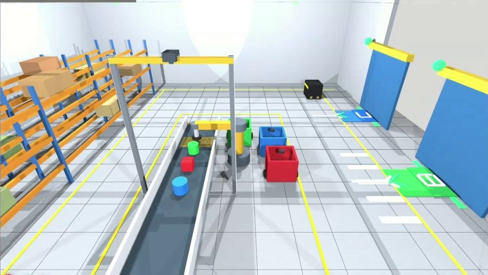
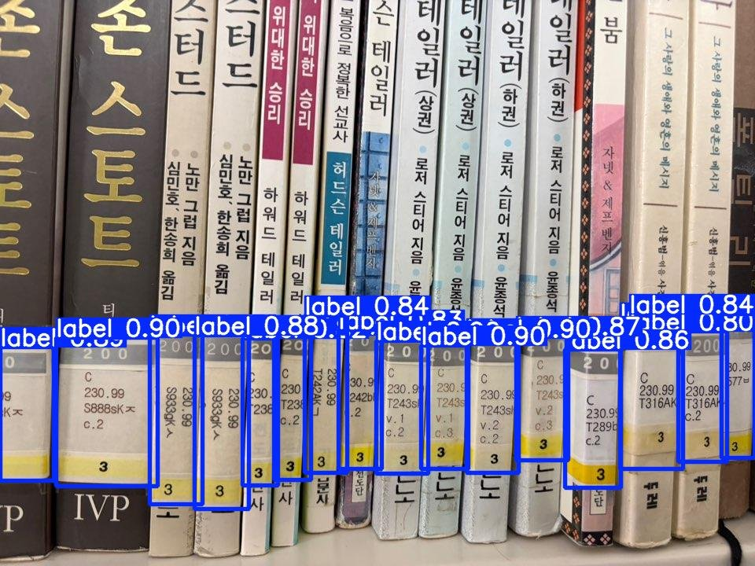

Industrial Sim Capstone
스마트 팩토리 물류 시뮬레이션
컨베이어 공급, RGB-D 비전 인식, 로봇팔 Pick & Place, Nav2 AMR 운송을 하나의 ROS 2 공정 상태 머신으로 통합했습니다. 시드 42 실행에서 A/B/C 3건 배송 완료, 단위 테스트 20/20 통과.
ProfilePortfolio 2026
박해원
Physical AI Engineer · 피지컬 AI
사람 대신 현장에서 일하는 이동 로봇이 어떻게 스스로 판단하고, 여러 대가 어떻게 함께 일할 수 있는지에 관심이 있습니다. 카메라와 라이다(LiDAR)로 주변을 이해하는 방법, 상황에 맞는 행동을 스스로 배우는 강화학습, 여러 로봇이 일을 나누고 조율하는 멀티에이전트 시스템을 공부하며, 스마트 팩토리와 물류 시뮬레이션에서 직접 실험하고 있습니다.
01 / Research
현장에서 일하는 이동 로봇이 어떻게 스스로 판단하고 함께 일할 수 있을까. 이 하나의 질문을 인식, 판단, 협업의 세 단계로 나눠 탐구합니다.
Perception
카메라와 라이다(LiDAR)로 얻은 정보를 바탕으로, 로봇이 자기 위치와 주변 물체, 장애물을 파악하는 방법을 공부합니다.
탐색 질문센서 정보가 불완전할 때, 로봇은 주변을 얼마나 믿고 움직여도 될까?
Reinforcement Learning
정해진 규칙 대신 시뮬레이션 속 시행착오를 통해, 로봇이 상황에 맞는 행동을 스스로 배우는 강화학습을 공부합니다.
탐색 질문학습한 판단이 처음 보는 상황에서도 안전하게 작동하려면 무엇이 필요할까?
Multi-agent
여러 대의 로봇이 일을 나누고, 같은 공간에서 서로 길을 양보하며 작업을 끝내는 멀티에이전트 협업을 공부합니다.
탐색 질문로봇이 늘어날수록 생기는 충돌과 대기를 어떻게 줄일 수 있을까?
02 / Selected Work

스마트 팩토리 물류 시뮬레이션
컨베이어 공급, RGB-D 비전 인식, 로봇팔 Pick & Place, Nav2 AMR 운송을 하나의 ROS 2 공정 상태 머신으로 통합했습니다. 시드 42 실행에서 A/B/C 3건 배송 완료, 단위 테스트 20/20 통과.
강화학습 기반 차량형 로봇 판단
차량형 로봇이 이동 장애물 앞에서 강화학습(PPO)으로 스스로 판단하게 하고, MPPI와 비교한 뒤 여러 대의 협업 주행으로 확장합니다. 현재 시뮬레이션 환경을 구축하고 있습니다.
사과 선별 · 물류 자동화
카메라로 사과 등급을 판정하고 AMR이 등급별 구역으로 운반하는 과정을 ROS 2 · Gazebo로 구현합니다. AMR 주행 · 물류 파트를 맡아 Nav2 운반 기능을 개발하고 있습니다.

장서점검 AI · YOLO + OCR 담당
책장 사진에서 YOLO11n으로 청구기호 스티커를 찾고 OCR로 읽는 장서점검 첫 데모를 만들었습니다. OCR을 PP-OCRv5로 바꿔 줄 일치율을 2.3배 높였고(평가 사진 7장 기준), 평가 데이터를 늘리는 중입니다.
03 / Skills & Methods
도구 이름보다 어떤 문제에 어떻게 썼는지를 기준으로 정리했습니다. 계산은 코드로, 해석은 AI로 나누고, 결과는 테스트와 재현 가능한 실행으로 확인합니다.
Robotics
Industrial Sim Capstone · Smart APC · Physical AI Mobility
ROS 2GazeboNav2 · AMCLRViz2MuJoCoState Machine Design
Computer Vision
Book Spine OCR · Industrial Sim Capstone
OpenCVYOLO11nPP-OCRv5EasyOCRRGB-D Position
04 / Activities
Physical AI
RGB-D 비전 인식, 컨베이어, 로봇팔, Nav2 AMR을 하나의 ROS 2 물류 공정으로 통합했습니다.
차량형 로봇의 경로 계획과 장애물 회피를 연구하며, 실물 차량 3대의 협동 주행을 목표로 가상 주행을 준비하고 있습니다.
카메라가 판정한 사과 등급을 운반 구역에 연결하고, 팀에서 AMR 주행과 물류 제어를 맡았습니다.
Vision AI
스마트폰 사진에서 청구기호 라벨을 검출하고 문자를 읽는 장서점검 데모를 개발하고 있습니다.
05 / Awards
독일 울름 공과대학교(Technische Hochschule Ulm)와 DASU가 주관한 산학 챌린지. 주제 “Handling Large Documents in Chatbots”에서 최우수 소프트웨어 엔지니어링 팀의 일원으로 선정되었습니다.
빅데이터 분석 대회에서 최우수상을 받았습니다.